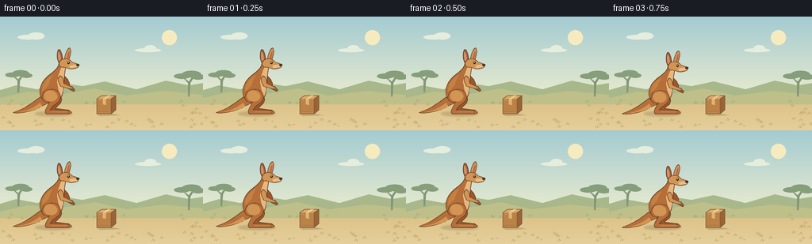
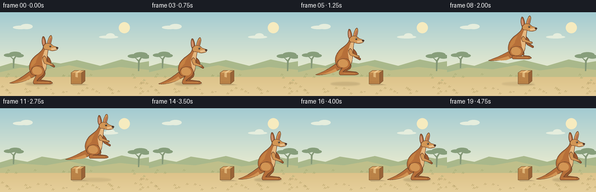

CODING AGENTS AS PIXEL WORLD MODELS
traex/GPT-6.1-Sol · dynamic_spatial_relationship_0032
点击播放 · 原生 RGB 像素
逐轮保存的候选
回放视频、检查图与代码变化。
每份候选均可单独播放。实际图片检查记录在下方工具轨迹中。
候选 01播放与检查图
点击播放 · 原生 RGB 像素


展开代码变化
--- 上一保存版本
+++ 本次保存版本
@@ -0,0 +1,159 @@
+from pathlib import Path
+import math
+import numpy as np
+from PIL import Image, ImageDraw, ImageFilter
+from artifact_io import save
+
+ROOT=Path(__file__).resolve().parent
+W,H,S=256,144,4
+
+def bezier_path(cmds):
+ points=[]; cur=(0,0); start=(0,0)
+ for cmd in cmds:
+ if cmd[0]=='M':
+ cur=(cmd[1],cmd[2]); start=cur; points.append(cur)
+ elif cmd[0]=='L':
+ cur=(cmd[1],cmd[2]); points.append(cur)
+ elif cmd[0]=='C':
+ p0=cur; p1=cmd[1:3]; p2=cmd[3:5]; p3=cmd[5:7]
+ for j in range(1,19):
+ t=j/18; q=1-t
+ points.append((q**3*p0[0]+3*q*q*t*p1[0]+3*q*t*t*p2[0]+t**3*p3[0], q**3*p0[1]+3*q*q*t*p1[1]+3*q*t*t*p2[1]+t**3*p3[1]))
+ cur=p3
+ elif cmd[0]=='Q':
+ p0=cur; p1=cmd[1:3]; p2=cmd[3:5]
+ for j in range(1,15):
+ t=j/14;q=1-t
+ points.append((q*q*p0[0]+2*q*t*p1[0]+t*t*p2[0],q*q*p0[1]+2*q*t*p1[1]+t*t*p2[1]))
+ cur=p2
+ elif cmd[0]=='Z': points.append(start)
+ return points
+
+def scene():
+ ar=np.zeros((H*S,W*S,3),dtype=np.uint8)
+ for yy in range(H*S):
+ y=yy/S
+ if y<96:
+ t=y/96; a=np.array([163,203,210]); b=np.array([229,233,207])
+ else:
+ t=(y-96)/(H-96); a=np.array([217,190,130]); b=np.array([230,207,155])
+ ar[yy]=a*(1-t)+b*t
+ im=Image.fromarray(ar); d=ImageDraw.Draw(im)
+ def poly(p,c): d.polygon([(int(x*S),int(y*S)) for x,y in p],fill=c)
+ def ell(b,c): d.ellipse(tuple(int(v*S) for v in b),fill=c)
+ # Warm sun and wisps of cloud, understated distant landscape.
+ ell((204,17,223,36),(246,235,191))
+ for b in [(22,23,48,29),(35,20,56,29),(170,40,203,45),(182,36,197,45)]: ell(b,(229,237,221))
+ poly([(0,93),(20,87),(47,92),(72,83),(104,88),(132,82),(172,92),(209,81),(238,87),(256,84),(256,104),(0,104)],(169,184,139))
+ poly([(0,103),(35,95),(79,98),(119,91),(159,100),(206,94),(256,99),(256,111),(0,111)],(191,191,138))
+ # Acacia silhouettes are restricted to the margins to keep the action readable.
+ for xx,yy,sc in [(23,96,0.74),(238,101,0.85)]:
+ poly([(xx-1,yy),(xx+1,yy),(xx+2,yy-20*sc),(xx+7*sc,yy-27*sc),(xx+5*sc,yy-29*sc),(xx,yy-22*sc),(xx-6*sc,yy-27*sc),(xx-7*sc,yy-26*sc),(xx-1,yy-20*sc)],(132,151,118))
+ for dx,dy,rx,ry in [(-10,-30,12,4),(4,-33,14,5),(14,-29,10,4)]:
+ ell((xx+(dx-rx)*sc,yy+(dy-ry)*sc,xx+(dx+rx)*sc,yy+(dy+ry)*sc),(135,158,123))
+ # Small natural grass blades and stones; deterministic and not animated.
+ rng=np.random.default_rng(47)
+ for _ in range(60):
+ x=float(rng.uniform(0,256)); y=float(rng.uniform(107,142))
+ if 39<x<231 and 114<y<130: continue
+ c=(184,163,105) if y>121 else (164,169,114)
+ d.line([(int((x-2)*S),int(y*S)),(int(x*S),int((y-3)*S)),(int((x+0.8)*S),int(y*S))],fill=c,width=S//2)
+ d.line([(int(x*S),int(y*S)),(int((x+3)*S),int((y-2)*S))],fill=c,width=S//2)
+ for x,y in [(10,132),(113,136),(242,121),(169,138),(86,132)]:
+ ell((x,y,x+3,y+1),(196,175,126))
+ return im
+
+BG=scene()
+
+def draw_box(im):
+ d=ImageDraw.Draw(im)
+ def p(points,c):d.polygon([(round(x*S),round(y*S)) for x,y in points],fill=c)
+ def line(points,c,w=.6):d.line([(round(x*S),round(y*S)) for x,y in points],fill=c,width=max(1,round(w*S)),joint='curve')
+ p([(121,123),(143,123),(152,125),(126,126)],(193,170,122))
+ # A small closed corrugated cardboard carton.
+ p([(122,104),(140,104),(140,123),(122,123)],(186,130,71))
+ p([(140,104),(146,100),(146,118),(140,123)],(152,99,55))
+ p([(122,104),(128,100),(146,100),(140,104)],(219,169,104))
+ line([(122,123),(122,104),(128,100),(146,100),(146,118),(140,123),(122,123)],(130,89,52),.7)
+ line([(140,123),(140,104),(146,100)],(131,89,49),.65)
+ p([(129.5,104),(133.5,104),(133.5,112),(129.5,111)],(221,179,118))
+ p([(129.5,104),(135.5,100),(139.5,100),(133.5,104)],(239,203,144))
+ line([(124,106),(127,106)],(213,163,99),.6)
+ line([(124,120),(137,120)],(169,114,62),.5)
+
+FUR=(182,111,57); LIGHT=(210,149,84); DARK=(113,68,40); EDGE=(103,65,42)
+
+def kangaroo(im,x,y,tuck=0,crouch=0,air=0,phase=0):
+ d=ImageDraw.Draw(im); scale=.9
+ # Body position is anchored to the hips; the hind limbs flex independently.
+ def pt(a,b): return (round((x+a*scale)*S),round((y+b*scale)*S))
+ def shape(cmds,color,outline=None,width=.65):
+ pts=[pt(*p) for p in bezier_path(cmds)]
+ d.polygon(pts,fill=color)
+ if outline:d.line(pts,fill=outline,width=max(1,round(width*S)),joint='curve')
+ def line(points,color,width=.65):d.line([pt(*p) for p in points],fill=color,width=max(1,round(width*S)),joint='curve')
+ def ellipse(b,color):d.ellipse([pt(b[0],b[1]),pt(b[2],b[3])],fill=color)
+ # A long tapering tail, not an extra leg.
+ tail_lift=air*6
+ shape([('M',-6,-2),('C',-18,3,-27,16-tail_lift,-53,25-tail_lift),('C',-46,27-tail_lift,-25,24-tail_lift,-13,16),('C',-4,12,2,9,3,5),('Z',)],FUR,EDGE)
+ shape([('M',-15,11),('C',-26,20-tail_lift,-38,24-tail_lift,-50,25-tail_lift),('C',-31,24-tail_lift,-21,21,-12,16),('Z',)],LIGHT)
+ # Far hind leg and its long horizontal foot.
+ a=tuck*11; c=crouch
+ shape([('M',2,0),('C',14,-2,18,5,13,12),('L',6,19-a-c*4),('L',23,21-a-c*4),('Q',28,22-a-c*4,27,25-a-c*4),('L',1,25-a-c*4),('Q',-1,20-a-c*4,3,14),('L',-2,7),('Z',)],(152,88,45),EDGE)
+ # Far forearm behind torso.
+ shape([('M',17,-28+c*4),('Q',28,-19+c*3,26,-12+c*2),('L',33,-8+c*2),('Q',34,-5+c*2,31,-5+c*2),('L',22,-10+c*2),('L',12,-22+c*4),('Z',)],(156,88,45),EDGE)
+ # Powerful pear-shaped trunk and narrow sloping neck.
+ shape([('M',-8,9),('C',-18,4,-17,-11+c*4,-10,-20+c*5),('C',-4,-29+c*6,5,-31+c*6,10,-40+c*7),('L',12,-46+c*7),('C',17,-49+c*7,23,-46+c*7,21,-39+c*7),('C',18,-28+c*6,20,-18+c*4,17,-6),('C',17,6,7,14,-8,9),('Z',)],FUR,EDGE,.8)
+ shape([('M',15,-39+c*7),('C',11,-29+c*6,9,-23+c*4,9,-17+c*3),('C',10,-9,13,-2,10,6),('C',16,2,18,-6,17,-16+c*4),('L',20,-39+c*7),('Z',)],(230,183,126))
+ shape([('M',-12,-5),('C',-13,-14,-6,-24+c*5,3,-28+c*6),('C',0,-24+c*4,-2,-19,-3,-14),('Q',-8,-8,-12,-5),('Z',)],(197,129,66))
+ # Thick near thigh, bent hock, and characteristic oversized hind foot.
+ shape([('M',-8,-5),('C',4,-12,15,-5,13,5),('C',12,10,8,12,4,15-a*.45),('L',-1,21-a-c*4),('L',21,22-a-c*4),('Q',28,22-a-c*4,29,25-a-c*4),('Q',27,27-a-c*4,22,27-a-c*4),('L',-6,27-a-c*4),('Q',-9,25-a-c*4,-7,20-a-c*4),('L',-2,10),('C',-11,12,-17,4,-8,-5),('Z',)],FUR,EDGE,.8)
+ shape([('M',-8,-4),('C',-2,-9,8,-5,9,1),('C',10,7,4,10,-1,9),('C',-8,9,-12,3,-8,-4),('Z',)],LIGHT)
+ line([(1,24-a-c*4),(23,24-a-c*4)],(200,140,76),.65)
+ line([(24,24-a-c*4),(25,26-a-c*4)],DARK,.5)
+ # Near small arm folds during the leap.
+ arm=air*5
+ shape([('M',13,-27+c*5),('C',17,-25+c*4,18,-20+c*3,18,-16-arm+c*2),('L',27,-12-arm+c*2),('Q',31,-12-arm+c*2,31,-9-arm+c*2),('Q',28,-7-arm+c*2,25,-9-arm+c*2),('L',14,-12-arm+c*2),('Q',11,-16,10,-23+c*5),('Z',)],LIGHT,EDGE)
+ line([(28,-11-arm+c*2),(29,-9-arm+c*2)],DARK,.5)
+ # Upright elongated ears and slim, alert head with a dark muzzle.
+ h=c*7
+ shape([('M',12,-44+h),('C',8,-49+h,8,-61+h,11,-64+h),('C',15,-64+h,17,-51+h,17,-45+h),('Z',)],(156,93,51),EDGE)
+ shape([('M',11,-48+h),('Q',9,-58+h,11,-61+h),('Q',14,-57+h,14,-48+h),('Z',)],(209,145,110))
+ shape([('M',19,-45+h),('C',18,-53+h,23,-66+h,26,-66+h),('C',31,-63+h,25,-50+h,24,-44+h),('Z',)],LIGHT,EDGE)
+ shape([('M',22,-48+h),('Q',23,-60+h,26,-62+h),('Q',27,-55+h,23,-48+h),('Z',)],(180,110,81))
+ shape([('M',12,-46+h),('C',15,-52+h,24,-52+h,28,-48+h),('C',30,-45+h,35,-45+h,38,-43+h),('Q',40,-41+h,37,-38+h),('C',29,-35+h,24,-37+h,19,-39+h),('Q',10,-38+h,12,-46+h),('Z',)],LIGHT,EDGE,.7)
+ shape([('M',26,-41+h),('Q',33,-43+h,38,-42+h),('Q',38,-38+h,33,-38+h),('L',27,-38+h),('Z',)],(232,190,137))
+ ellipse((35.5,-43.6+h,40,-40.2+h),(74,53,42))
+ line([(31,-37.8+h),(35.5,-38.5+h)],DARK,.6)
+ ellipse((23,-46.9+h,26.5,-43.3+h),(56,43,34))
+ ellipse((24,-46.4+h,25.1,-45.3+h),(255,247,214))
+ line([(22.5,-48+h),(26,-47.8+h)],(151,91,49),.55)
+
+
+def make_frame(i):
+ im=BG.copy()
+ if i<=3:
+ x=64; lift=0; tuck=0; crouch=0 if i<3 else .38; air=0
+ elif i==4:
+ x=64;lift=0;tuck=0;crouch=1;air=0
+ elif i<=14:
+ u=(i-4)/10
+ x=64+(201-64)*u
+ lift=35*4*u*(1-u)
+ tuck=math.sin(math.pi*u)
+ crouch=0;air=tuck
+ else:
+ x=201;lift=0;tuck=0;crouch={15:.8,16:.25}.get(i,0);air=0
+ # Soft contact shadow stays on the ground and softens in the air.
+ sh=Image.new('RGBA',im.size,(0,0,0,0)); sd=ImageDraw.Draw(sh)
+ spread=20+lift*.13
+ sd.ellipse(((x-spread)*S,120*S,(x+spread+7)*S,126*S),fill=(101,81,45,int(57-lift*.8)))
+ sh=sh.filter(ImageFilter.GaussianBlur(1.1*S))
+ im=Image.alpha_composite(im.convert('RGBA'),sh).convert('RGB')
+ draw_box(im)
+ kangaroo(im,x,99-lift+crouch*3.6,tuck,crouch,air,i)
+ return np.asarray(im.resize((W,H),Image.Resampling.LANCZOS),dtype=np.uint8)
+
+if __name__=='__main__':
+ frames=np.stack([make_frame(i) for i in range(20)])
+ save(frames,ROOT)
可观测工具轨迹
实际执行的命令与返回图片。
命令 1exit 0
/bin/bash -lc "ls -la && cat prompt.txt && printf '\\n---RULES---\\n' && cat GENERATION_RULES.md && printf '\\n---SPEC---\\n' && cat task_spec.json"
命令 2exit 0
/bin/bash -lc 'cat artifact_io.py'
命令 3exit 0
/bin/bash -lc "cat > generate.py <<'PY'
from pathlib import Path
import math
import numpy as np
from PIL import Image, ImageDraw, ImageFilter
from artifact_io import save
ROOT=Path(__file__).resolve().parent
W,H,S=256,144,4
def bezier_path(cmds):
points=[]; cur=(0,0); start=(0,0)
for cmd in cmds:
if cmd[0]=='M':
cur=(cmd[1],cmd[2]); start=cur; points.append(cur)
elif cmd[0]=='L':
cur=(cmd[1],cmd[2]); points.append(cur)
elif cmd[0]=='C':
p0=cur; p1=cmd[1:3]; p2=cmd[3:5]; p3=cmd[5:7]
for j in range(1,19):
t=j/18; q=1-t
points.append((q**3*p0[0]+3*q*q*t*p1[0]+3*q*t*t*p2[0]+t**3*p3[0], q**3*p0[1]+3*q*q*t*p1[1]+3*q*t*t*p2[1]+t**3*p3[1]))
cur=p3
elif cmd[0]=='Q':
p0=cur; p1=cmd[1:3]; p2=cmd[3:5]
for j in range(1,15):
t=j/14;q=1-t
points.append((q*q*p0[0]+2*q*t*p1[0]+t*t*p2[0],q*q*p0[1]+2*q*t*p1[1]+t*t*p2[1]))
cur=p2
elif cmd[0]=='Z': points.append(start)
return points
def scene():
ar=np.zeros((H*S,W*S,3),dtype=np.uint8)
for yy in range(H*S):
y=yy/S
if y<96:
t=y/96; a=np.array([163,203,210]); b=np.array([229,233,207])
else:
t=(y-96)/(H-96); a=np.array([217,190,130]); b=np.array([230,207,155])
ar[yy]=a*(1-t)+b*t
im=Image.fromarray(ar); d=ImageDraw.Draw(im)
def poly(p,c): d.polygon([(int(x*S),int(y*S)) for x,y in p],fill=c)
def ell(b,c): d.ellipse(tuple(int(v*S) for v in b),fill=c)
# Warm sun and wisps of cloud, understated distant landscape.
ell((204,17,223,36),(246,235,191))
for b in [(22,23,48,29),(35,20,56,29),(170,40,203,45),(182,36,197,45)]: ell(b,(229,237,221))
poly([(0,93),(20,87),(47,92),(72,83),(104,88),(132,82),(172,92),(209,81),(238,87),(256,84),(256,104),(0,104)],(169,184,139))
poly([(0,103),(35,95),(79,98),(119,91),(159,100),(206,94),(256,99),(256,111),(0,111)],(191,191,138))
# Acacia silhouettes are restricted to the margins to keep the action readable.
for xx,yy,sc in [(23,96,0.74),(238,101,0.85)]:
poly([(xx-1,yy),(xx+1,yy),(xx+2,yy-20*sc),(xx+7*sc,yy-27*sc),(xx+5*sc,yy-29*sc),(xx,yy-22*sc),(xx-6*sc,yy-27*sc),(xx-7*sc,yy-26*sc),(xx-1,yy-20*sc)],(132,151,118))
for dx,dy,rx,ry in [(-10,-30,12,4),(4,-33,14,5),(14,-29,10,4)]:
ell((xx+(dx-rx)*sc,yy+(dy-ry)*sc,xx+(dx+rx)*sc,yy+(dy+ry)*sc),(135,158,123))
# Small natural grass blades and stones; deterministic and not animated.
rng=np.random.default_rng(47)
for _ in range(60):
x=float(rng.uniform(0,256)); y=float(rng.uniform(107,142))
if 39<x<231 and 114<y<130: continue
c=(184,163,105) if y>121 else (164,169,114)
d.line([(int((x-2)*S),int(y*S)),(int(x*S),int((y-3)*S)),(int((x+0.8)*S),int(y*S))],fill=c,width=S//2)
d.line([(int(x*S),int(y*S)),(int((x+3)*S),int((y-2)*S))],fill=c,width=S//2)
for x,y in [(10,132),(113,136),(242,121),(169,138),(86,132)]:
ell((x,y,x+3,y+1),(196,175,126))
return im
BG=scene()
def draw_box(im):
d=ImageDraw.Draw(im)
def p(points,c):d.polygon([(round(x*S),round(y*S)) for x,y in points],fill=c)
def line(points,c,w=.6):d.line([(round(x*S),round(y*S)) for x,y in points],fill=c,width=max(1,round(w*S)),joint='curve')
p([(121,123),(143,123),(152,125),(126,126)],(193,170,122))
# A small closed corrugated cardboard carton.
p([(122,104),(140,104),(140,123),(122,123)],(186,130,71))
p([(140,104),(146,100),(146,118),(140,123)],(152,99,55))
p([(122,104),(128,100),(146,100),(140,104)],(219,169,104))
line([(122,123),(122,104),(128,100),(146,100),(146,118),(140,123),(122,123)],(130,89,52),.7)
line([(140,123),(140,104),(146,100)],(131,89,49),.65)
p([(129.5,104),(133.5,104),(133.5,112),(129.5,111)],(221,179,118))
p([(129.5,104),(135.5,100),(139.5,100),(133.5,104)],(239,203,144))
line([(124,106),(127,106)],(213,163,99),.6)
line([(124,120),(137,120)],(169,114,62),.5)
FUR=(182,111,57); LIGHT=(210,149,84); DARK=(113,68,40); EDGE=(103,65,42)
def kangaroo(im,x,y,tuck=0,crouch=0,air=0,phase=0):
d=ImageDraw.Draw(im); scale=.9
# Body position is anchored to the hips; the hind limbs flex independently.
def pt(a,b): return (round((x+a*scale)*S),round((y+b*scale)*S))
def shape(cmds,color,outline=None,width=.65):
pts=[pt(*p) for p in bezier_path(cmds)]
d.polygon(pts,fill=color)
if outline:d.line(pts,fill=outline,width=max(1,round(width*S)),joint='curve')
def line(points,color,width=.65):d.line([pt(*p) for p in points],fill=color,width=max(1,round(width*S)),joint='curve')
def ellipse(b,color):d.ellipse([pt(b[0],b[1]),pt(b[2],b[3])],fill=color)
# A long tapering tail, not an extra leg.
tail_lift=air*6
shape([('M',-6,-2),('C',-18,3,-27,16-tail_lift,-53,25-tail_lift),('C',-46,27-tail_lift,-25,24-tail_lift,-13,16),('C',-4,12,2,9,3,5),('Z',)],FUR,EDGE)
shape([('M',-15,11),('C',-26,20-tail_lift,-38,24-tail_lift,-50,25-tail_lift),('C',-31,24-tail_lift,-21,21,-12,16),('Z',)],LIGHT)
# Far hind leg and its long horizontal foot.
a=tuck*11; c=crouch
shape([('M',2,0),('C',14,-2,18,5,13,12),('L',6,19-a-c*4),('L',23,21-a-c*4),('Q',28,22-a-c*4,27,25-a-c*4),('L',1,25-a-c*4),('Q',-1,20-a-c*4,3,14),('L',-2,7),('Z',)],(152,88,45),EDGE)
# Far forearm behind torso.
shape([('M',17,-28+c*4),('Q',28,-19+c*3,26,-12+c*2),('L',33,-8+c*2),('Q',34,-5+c*2,31,-5+c*2),('L',22,-10+c*2),('L',12,-22+c*4),('Z',)],(156,88,45),EDGE)
# Powerful pear-shaped trunk and narrow sloping neck.
shape([('M',-8,9),('C',-18,4,-17,-11+c*4,-10,-20+c*5),('C',-4,-29+c*6,5,-31+c*6,10,-40+c*7),('L',12,-46+c*7),('C',17,-49+c*7,23,-46+c*7,21,-39+c*7),('C',18,-28+c*6,20,-18+c*4,17,-6),('C',17,6,7,14,-8,9),('Z',)],FUR,EDGE,.8)
shape([('M',15,-39+c*7),('C',11,-29+c*6,9,-23+c*4,9,-17+c*3),('C',10,-9,13,-2,10,6),('C',16,2,18,-6,17,-16+c*4),('L',20,-39+c*7),('Z',)],(230,183,126))
shape([('M',-12,-5),('C',-13,-14,-6,-24+c*5,3,-28+c*6),('C',0,-24+c*4,-2,-19,-3,-14),('Q',-8,-8,-12,-5),('Z',)],(197,129,66))
# Thick near thigh, bent hock, and characteristic oversized hind foot.
shape([('M',-8,-5),('C',4,-12,15,-5,13,5),('C',12,10,8,12,4,15-a*.45),('L',-1,21-a-c*4),('L',21,22-a-c*4),('Q',28,22-a-c*4,29,25-a-c*4),('Q',27,27-a-c*4,22,27-a-c*4),('L',-6,27-a-c*4),('Q',-9,25-a-c*4,-7,20-a-c*4),('L',-2,10),('C',-11,12,-17,4,-8,-5),('Z',)],FUR,EDGE,.8)
shape([('M',-8,-4),('C',-2,-9,8,-5,9,1),('C',10,7,4,10,-1,9),('C',-8,9,-12,3,-8,-4),('Z',)],LIGHT)
line([(1,24-a-c*4),(23,24-a-c*4)],(200,140,76),.65)
line([(24,24-a-c*4),(25,26-a-c*4)],DARK,.5)
# Near small arm folds during the leap.
arm=air*5
shape([('M',13,-27+c*5),('C',17,-25+c*4,18,-20+c*3,18,-16-arm+c*2),('L',27,-12-arm+c*2),('Q',31,-12-arm+c*2,31,-9-arm+c*2),('Q',28,-7-arm+c*2,25,-9-arm+c*2),('L',14,-12-arm+c*2),('Q',11,-16,10,-23+c*5),('Z',)],LIGHT,EDGE)
line([(28,-11-arm+c*2),(29,-9-arm+c*2)],DARK,.5)
# Upright elongated ears and slim, alert head with a dark muzzle.
h=c*7
shape([('M',12,-44+h),('C',8,-49+h,8,-61+h,11,-64+h),('C',15,-64+h,17,-51+h,17,-45+h),('Z',)],(156,93,51),EDGE)
shape([('M',11,-48+h),('Q',9,-58+h,11,-61+h),('Q',14,-57+h,14,-48+h),('Z',)],(209,145,110))
shape([('M',19,-45+h),('C',18,-53+h,23,-66+h,26,-66+h),('C',31,-63+h,25,-50+h,24,-44+h),('Z',)],LIGHT,EDGE)
shape([('M',22,-48+h),('Q',23,-60+h,26,-62+h),('Q',27,-55+h,23,-48+h),('Z',)],(180,110,81))
shape([('M',12,-46+h),('C',15,-52+h,24,-52+h,28,-48+h),('C',30,-45+h,35,-45+h,38,-43+h),('Q',40,-41+h,37,-38+h),('C',29,-35+h,24,-37+h,19,-39+h),('Q',10,-38+h,12,-46+h),('Z',)],LIGHT,EDGE,.7)
shape([('M',26,-41+h),('Q',33,-43+h,38,-42+h),('Q',38,-38+h,33,-38+h),('L',27,-38+h),('Z',)],(232,190,137))
ellipse((35.5,-43.6+h,40,-40.2+h),(74,53,42))
line([(31,-37.8+h),(35.5,-38.5+h)],DARK,.6)
ellipse((23,-46.9+h,26.5,-43.3+h),(56,43,34))
ellipse((24,-46.4+h,25.1,-45.3+h),(255,247,214))
line([(22.5,-48+h),(26,-47.8+h)],(151,91,49),.55)
def make_frame(i):
im=BG.copy()
if i<=3:
x=64; lift=0; tuck=0; crouch=0 if i<3 else .38; air=0
elif i==4:
x=64;lift=0;tuck=0;crouch=1;air=0
elif i<=14:
u=(i-4)/10
x=64+(201-64)*u
lift=35*4*u*(1-u)
tuck=math.sin(math.pi*u)
crouch=0;air=tuck
else:
x=201;lift=0;tuck=0;crouch={15:.8,16:.25}.get(i,0);air=0
# Soft contact shadow stays on the ground and softens in the air.
sh=Image.new('RGBA',im.size,(0,0,0,0)); sd=ImageDraw.Draw(sh)
spread=20+lift*.13
sd.ellipse(((x-spread)*S,120*S,(x+spread+7)*S,126*S),fill=(101,81,45,int(57-lift*.8)))
sh=sh.filter(ImageFilter.GaussianBlur(1.1*S))
im=Image.alpha_composite(im.convert('RGBA'),sh).convert('RGB')
draw_box(im)
kangaroo(im,x,99-lift+crouch*3.6,tuck,crouch,air,i)
return np.asarray(im.resize((W,H),Image.Resampling.LANCZOS),dtype=np.uint8)
if __name__=='__main__':
frames=np.stack([make_frame(i) for i in range(20)])
save(frames,ROOT)
PY
python generate.py"视觉工具实际返回图片 1

保存候选 1 份；完成命令 3 次；可验证图片返回 1 张。原始 API 响应与完整日志保留在本地。